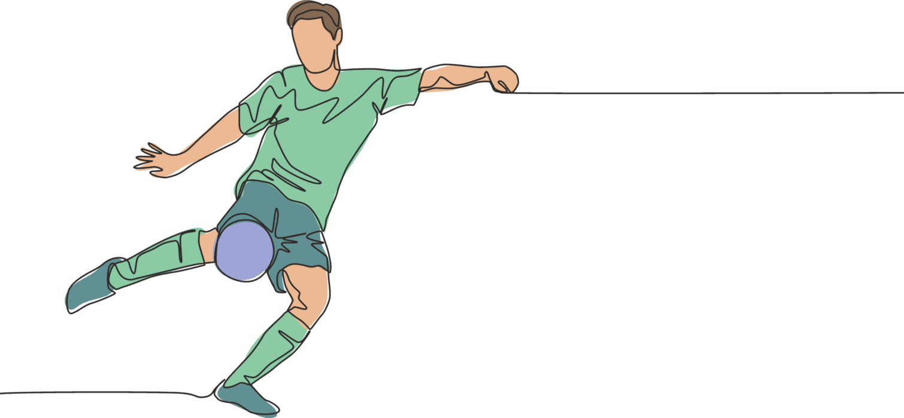

Salidas y Despejes (25 minutos)
•Salidas frontales:
El entrenador lanza balones altos al área pequeña. El portero debe salir con decisión, calcular la trayectoria y atrapar el balón en el punto más alto.
Variación: El entrenador puede añadir un defensor para simular presión y obligar al portero a tomar decisiones rápidas.

•Despejes con los puños:
Balones altos al área. El portero debe despejar con los puños, asegurando distancia y dirección para evitar segundas jugadas del rival.
Énfasis en la técnica correcta: manos juntas, golpeo con la base de los puños y movimiento coordinado del cuerpo.

•Salidas laterales:
El entrenador lanza balones a los lados del área. El portero debe salir rápidamente, anticipar al delantero y desviar el balón con las manos o los pies, según la situación.
Trabajo de pies: mejorar la agilidad y velocidad de reacción para llegar a los balones laterales.
Atajadas y Reflejos (25 minutos)

•Atajadas a media altura:
El entrenador lanza balones a media altura desde diferentes ángulos y distancias. El portero debe reaccionar rápidamente y realizar la atajada con la técnica correcta (manos en forma de copa, cuerpo detrás del balón).
Variación: Utilizar conos para simular obstáculos y obligar al portero a ajustar su posición y técnica.

•Reflejos a corta distancia:
El entrenador lanza balones a quemarropa desde corta distancia. El portero debe reaccionar instintivamente y utilizar cualquier parte del cuerpo para evitar el gol.
Ejercicios con pelotas de tenis: lanzar pelotas de tenis de forma inesperada para mejorar la velocidad de reacción y la coordinación ojo-mano.
•Atajadas en el suelo:
El entrenador lanza balones rasos desde diferentes ángulos. El portero debe lanzarse al suelo con la técnica adecuada (extensión lateral, protección de la cabeza) y asegurar el balón.
Énfasis en la seguridad: proteger el cuerpo y evitar golpes innecesarios.
Juego con los Pies (15 minutos)

•Pases cortos y largos:
El portero realiza pases cortos a un compañero cercano, utilizando diferentes superficies del pie (interior, exterior, empeine).
Pases largos: practicar pases largos con el pie para iniciar contraataques o cambiar el juego de dirección.
Énfasis en la precisión y potencia del pase.
•Control del balón:
Ejercicios de control del balón con los pies: dominar el balón en movimiento, realizar cambios de dirección y proteger el balón de la presión del rival.
•Salida jugando desde atrás:
Simulación de situaciones de juego donde el portero debe recibir el balón de un defensor y distribuirlo con los pies, eligiendo la mejor opción según la posición de los compañeros y rivales.
Trabajar la comunicación con los defensores para coordinar las salidas y evitar errores.
Enfriamiento (10 minutos)
•Trote suave: Reducir gradualmente la intensidad del ejercicio.
•Estiramientos estáticos: Mantener cada estiramiento durante 20-30 segundos para mejorar la flexibilidad y prevenir lesiones.
•Relajación: Ejercicios de respiración profunda para reducir el estrés y promover la recuperación.
|